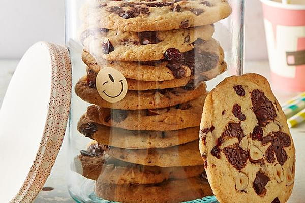

World's best Chocolate Chip Cookies

Ein Rezept für klassisch amerikanische Chocolate Chip Cookies.
Hier wird nicht mit Kalorien gespart, versprochen!
Hinweis: Das originale Rezept stammt von hier
, das ganze soll nur eine kleine Übung für mich selber sein.
Kochzeit: ca. 20 Minuten
Schwierigkeitsgrad: Easy-peasy
Kalorien pro Cookie: so pi mal Daumen 100kcal
Zutaten
Ihr benötigt die folgenden 9 Zutaten für das Rezept:
- 250g Butter
- 200g Rohrzucker
- 175g Zucker
- 1 TL Butter-Vanille-Aroma (oder 1/2 Fläschchen)
- 2 Eier
- 375g Mehl
- 2 TL Backpulver
- 300g Bitterschokolade, gehackt
- 200g Nüsse, gehackt oder Studentenfutter
Zubereitung
Gesamtzeit ca. 35 Minuten, unterteilt in:
- Arbeitszeit 20 Minuten
- Koch/backzeit 15 Minuten
- Den Ofen auf 175 °C vorheizen.
- Die Butter mit den Zuckersorten cremig schlagen, Vanillearome und Eier
darunter rühren.
- In einer separaten Schüssel Mehl und Backpulver mischen und in die Buttermasse
einrühren.
- Zuletzt die Schokostückchen und die nüsse unterheben.
- Den Teig mit einem Esslöffel auf ein mit Backpapier ausgelegtes Bleck setzen und
bei 175 °C etwa 10 - 12 Minuten backen. Für besonders krosse Cookies bis
zu 15 Minuten backen.
- Etwa 5 Minuten auf dem Blech ruhen lassen, dann auf ein Kuchengitter setzen.
Die Cookies schmecken warm wie kalt grandios.
Eine Portion ergibt etwa 75 mittelgrosse Cookies.